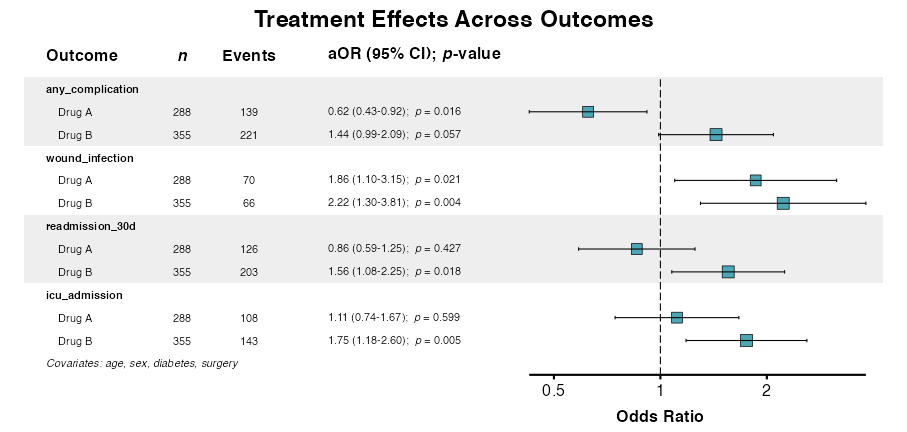
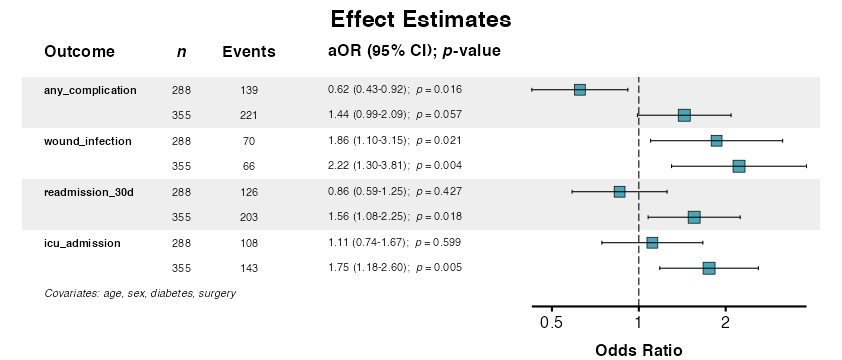
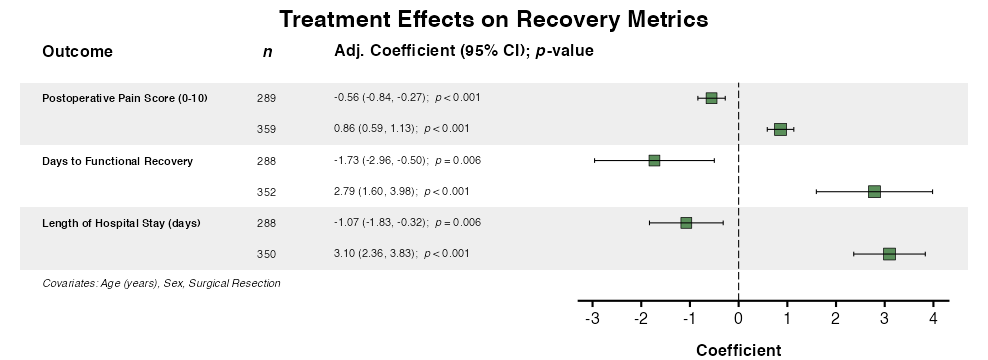
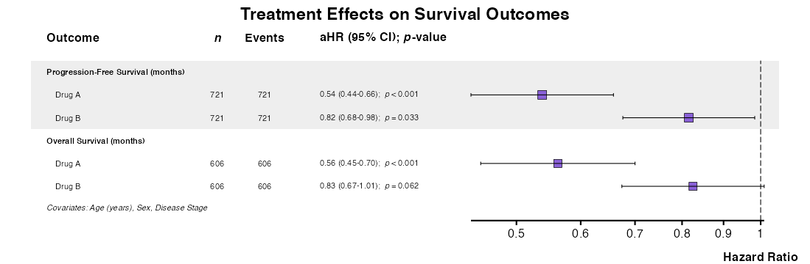
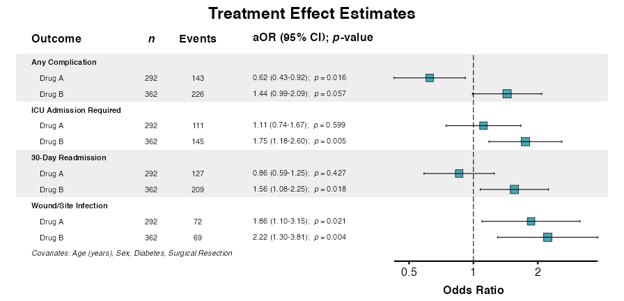

Multivariate regression refers to the simultaneous examination of a
single independent predictor across multiple dependent variables. This
approach inverts the typical regression paradigm: rather than testing
multiple predictors against one outcome (as in uniscreen(),
fit(), and fullfit()), multivariate regression
tests the predictive value of a individual factor against multiple
outcomes, with or without multivariable adjustment for other independent
factors. This design is particularly useful when a key exposure or
intervention must be evaluated against several endpoints
simultaneously.
The multifit() function implements this workflow,
supporting all model types available in summata with
optional covariate adjustment, interaction terms, and mixed-effects
specifications. Results can be visualized using
multiforest() and exported using standard table export
functions.
As with other summata functions, this function adheres
to the standard calling convention:
multifit(data, outcomes, predictor, covariates, model_type, ...)where data is the dataset, outcomes is a
vector of screened outcome variables, predictor is the
predicting variable under examination, covariates is a
vector of simultaneous independent predicting variables (i.e., potential
confounders), and model_type is the type of model to be
implemented. This vignette demonstrates the various capabilities of this
function using the included sample dataset.
Preliminaries
The examples in this vignette use the clintrial dataset
included with summata:
The clintrial dataset includes multiple outcome types
suitable for multivariate analysis:
| Outcome Type | Variables | Model |
|---|---|---|
| Continuous |
los_days, pain_score,
recovery_days
|
lm |
| Binary |
any_complication,
wound_infection, readmission_30d,
icu_admission
|
glm (binomial) |
| Count (equidispersed) | fu_count |
glm (poisson) |
| Count (overdispersed) | ae_count |
negbin or quasipoisson
|
| Time-to-event |
Surv(pfs_months, pfs_status),
Surv(os_months, os_status)
|
coxph |
Basic Usage
Example 1: Unadjusted Analysis
Test a single predictor against multiple binary outcomes:
example1 <- multifit(
data = clintrial,
outcomes = c("any_complication", "wound_infection",
"readmission_30d", "icu_admission"),
predictor = "surgery",
labels = clintrial_labels,
parallel = FALSE
)
example1
##>
##> Multivariate Analysis Results
##> Predictor: surgery
##> Outcomes: 4
##> Model Type: glm
##> Display: unadjusted
##>
##> Outcome Predictor n Events OR (95% CI) p-value
##> <char> <char> <char> <char> <char> <char>
##> 1: Any Complication Surgical Resection 370 236 1.70 (1.29-2.25) < 0.001
##> 2: Wound/Site Infection Surgical Resection 370 121 4.58 (3.16-6.66) < 0.001
##> 3: 30-Day Readmission Surgical Resection 370 181 0.91 (0.69-1.19) 0.500
##> 4: ICU Admission Required Surgical Resection 370 179 2.25 (1.70-2.99) < 0.001Each row shows the effect of the predictor on a specific outcome. For categorical predictors, each non-reference level appears separately.
Example 2: Adjusted Analysis
Include covariates for confounding control:
example2 <- multifit(
data = clintrial,
outcomes = c("any_complication", "wound_infection",
"readmission_30d", "icu_admission"),
predictor = "surgery",
covariates = c("age", "sex", "smoking", "diabetes"),
labels = clintrial_labels,
parallel = FALSE
)
example2
##>
##> Multivariate Analysis Results
##> Predictor: surgery
##> Outcomes: 4
##> Model Type: glm
##> Covariates: age, sex, smoking, diabetes
##> Display: adjusted
##>
##> Outcome Predictor n Events aOR (95% CI) p-value
##> <char> <char> <char> <char> <char> <char>
##> 1: Any Complication Surgical Resection 362 229 1.84 (1.38-2.47) < 0.001
##> 2: Wound/Site Infection Surgical Resection 362 117 5.21 (3.48-7.80) < 0.001
##> 3: 30-Day Readmission Surgical Resection 362 176 1.07 (0.80-1.43) 0.641
##> 4: ICU Admission Required Surgical Resection 362 173 2.56 (1.90-3.46) < 0.001Example 3: Unadjusted and Adjusted Comparison
Use columns = "both" to display unadjusted and adjusted
results side-by-side:
example3 <- multifit(
data = clintrial,
outcomes = c("any_complication", "wound_infection",
"readmission_30d", "icu_admission"),
predictor = "surgery",
covariates = c("age", "sex", "diabetes", "surgery"),
columns = "both",
labels = clintrial_labels,
parallel = FALSE
)
example3
##>
##> Multivariate Analysis Results
##> Predictor: surgery
##> Outcomes: 4
##> Model Type: glm
##> Covariates: age, sex, diabetes, surgery
##> Display: both
##>
##> Outcome Predictor n Events OR (95% CI) Uni p aOR (95% CI) Multi p
##> <char> <char> <char> <char> <char> <char> <char> <char>
##> 1: Any Complication Surgical Resection 370 236 1.70 (1.29-2.25) < 0.001 1.82 (1.36-2.43) < 0.001
##> 2: ICU Admission Required Surgical Resection 370 179 2.25 (1.70-2.99) < 0.001 2.57 (1.90-3.47) < 0.001
##> 3: 30-Day Readmission Surgical Resection 370 181 0.91 (0.69-1.19) 0.500 1.05 (0.79-1.40) 0.720
##> 4: Wound/Site Infection Surgical Resection 370 121 4.58 (3.16-6.66) < 0.001 4.98 (3.35-7.40) < 0.001Comparing columns reveals confounding (large differences) or robust associations (similar estimates).
Predictor Types
Example 4: Continuous Predictors
For continuous predictors, one row appears per outcome:
example4 <- multifit(
data = clintrial,
outcomes = c("any_complication", "wound_infection", "icu_admission"),
predictor = "age",
covariates = c("sex", "treatment", "surgery"),
labels = clintrial_labels,
parallel = FALSE
)
example4
##>
##> Multivariate Analysis Results
##> Predictor: age
##> Outcomes: 3
##> Model Type: glm
##> Covariates: sex, treatment, surgery
##> Display: adjusted
##>
##> Outcome n Events aOR (95% CI) p-value
##> <char> <char> <char> <char> <char>
##> 1: Any Complication 850 480 1.01 (1.00-1.03) 0.024
##> 2: Wound/Site Infection 850 167 1.01 (0.99-1.02) 0.338
##> 3: ICU Admission Required 850 320 1.03 (1.02-1.04) < 0.001The effect estimate represents the change in log-odds per one-unit increase in the predictor.
Example 5: Multilevel Categorical Predictors
For categorical predictors with multiple levels, the display is expanded:
example5 <- multifit(
data = clintrial,
outcomes = c("any_complication", "wound_infection",
"readmission_30d", "icu_admission"),
predictor = "treatment",
covariates = c("age", "sex", "surgery"),
labels = clintrial_labels,
parallel = FALSE
)
example5
##>
##> Multivariate Analysis Results
##> Predictor: treatment
##> Outcomes: 4
##> Model Type: glm
##> Covariates: age, sex, surgery
##> Display: adjusted
##>
##> Outcome Predictor n Events aOR (95% CI) p-value
##> <char> <char> <char> <char> <char> <char>
##> 1: Any Complication Treatment Group (Drug A) 292 143 0.66 (0.45-0.96) 0.031
##> 2: Any Complication Treatment Group (Drug B) 362 226 1.48 (1.03-2.14) 0.035
##> 3: Wound/Site Infection Treatment Group (Drug A) 292 72 1.90 (1.14-3.17) 0.013
##> 4: Wound/Site Infection Treatment Group (Drug B) 362 69 2.26 (1.34-3.79) 0.002
##> 5: 30-Day Readmission Treatment Group (Drug A) 292 127 0.86 (0.59-1.24) 0.415
##> 6: 30-Day Readmission Treatment Group (Drug B) 362 209 1.61 (1.12-2.31) 0.010
##> 7: ICU Admission Required Treatment Group (Drug A) 292 111 1.11 (0.74-1.65) 0.615
##> 8: ICU Admission Required Treatment Group (Drug B) 362 145 1.70 (1.16-2.50) 0.007Model Types
Example 6: Cox Regression
For time-to-event outcomes, use
model_type = "coxph":
example6 <- multifit(
data = clintrial,
outcomes = c("Surv(pfs_months, pfs_status)",
"Surv(os_months, os_status)"),
predictor = "treatment",
covariates = c("age", "sex", "stage"),
model_type = "coxph",
labels = clintrial_labels,
parallel = FALSE
)
example6
##>
##> Multivariate Analysis Results
##> Predictor: treatment
##> Outcomes: 2
##> Model Type: coxph
##> Covariates: age, sex, stage
##> Display: adjusted
##>
##> Outcome Predictor n Events aHR (95% CI) p-value
##> <char> <char> <char> <char> <char> <char>
##> 1: Progression-Free Survival (months) Treatment Group (Drug A) 721 721 0.54 (0.44-0.66) < 0.001
##> 2: Progression-Free Survival (months) Treatment Group (Drug B) 721 721 0.82 (0.68-0.98) 0.033
##> 3: Overall Survival (months) Treatment Group (Drug A) 606 606 0.56 (0.45-0.70) < 0.001
##> 4: Overall Survival (months) Treatment Group (Drug B) 606 606 0.83 (0.67-1.01) 0.062Example 7: Linear Regression
For continuous outcomes, use model_type = "lm":
example7 <- multifit(
data = clintrial,
outcomes = c("los_days", "pain_score", "recovery_days"),
predictor = "treatment",
covariates = c("age", "sex", "surgery"),
model_type = "lm",
labels = clintrial_labels,
parallel = FALSE
)
example7
##>
##> Multivariate Analysis Results
##> Predictor: treatment
##> Outcomes: 3
##> Model Type: lm
##> Covariates: age, sex, surgery
##> Display: adjusted
##>
##> Outcome Predictor n Adj. Coefficient (95% CI) p-value
##> <char> <char> <char> <char> <char>
##> 1: Length of Hospital Stay (days) Treatment Group (Drug A) 288 -1.07 (-1.83 to -0.32) 0.006
##> 2: Length of Hospital Stay (days) Treatment Group (Drug B) 350 3.10 (2.36 to 3.83) < 0.001
##> 3: Postoperative Pain Score (0-10) Treatment Group (Drug A) 289 -0.56 (-0.84 to -0.27) < 0.001
##> 4: Postoperative Pain Score (0-10) Treatment Group (Drug B) 359 0.86 (0.59 to 1.13) < 0.001
##> 5: Days to Functional Recovery Treatment Group (Drug A) 288 -1.73 (-2.96 to -0.50) 0.006
##> 6: Days to Functional Recovery Treatment Group (Drug B) 352 2.79 (1.60 to 3.98) < 0.001Example 8: Mixed-Effects Models
Account for clustering using random effects:
example8 <- multifit(
data = clintrial,
outcomes = c("any_complication", "wound_infection"),
predictor = "treatment",
covariates = c("age", "sex"),
random = "(1|site)",
model_type = "glmer",
labels = clintrial_labels,
parallel = FALSE
)
example8
##>
##> Multivariate Analysis Results
##> Predictor: treatment
##> Outcomes: 2
##> Model Type: glmer
##> Covariates: age, sex
##> Random Effects: (1|site)
##> Display: adjusted
##>
##> Outcome Predictor n Events aOR (95% CI) p-value
##> <char> <char> <char> <char> <char> <char>
##> 1: Any Complication Treatment Group (Drug A) 292 143 0.74 (0.51-1.06) 0.104
##> 2: Any Complication Treatment Group (Drug B) 362 226 1.29 (0.90-1.84) 0.170
##> 3: Wound/Site Infection Treatment Group (Drug A) 292 72 2.17 (1.32-3.57) 0.002
##> 4: Wound/Site Infection Treatment Group (Drug B) 362 69 1.62 (0.99-2.66) 0.055Advanced Features
Example 9: Interaction Terms
Interaction terms can be added to test effect modification:
example9 <- multifit(
data = clintrial,
outcomes = c("any_complication", "wound_infection"),
predictor = "treatment",
covariates = c("age", "sex"),
interactions = c("treatment:sex"),
labels = clintrial_labels,
parallel = FALSE
)
example9
##>
##> Multivariate Analysis Results
##> Predictor: treatment
##> Outcomes: 2
##> Model Type: glm
##> Covariates: age, sex
##> Interactions: treatment:sex
##> Display: adjusted
##>
##> Outcome Predictor n Events aOR (95% CI) p-value
##> <char> <char> <char> <char> <char> <char>
##> 1: Any Complication Treatment Group (Drug A) 292 143 0.63 (0.38-1.04) 0.074
##> 2: Any Complication Treatment Group (Drug B) 362 226 1.27 (0.78-2.08) 0.340
##> 3: Any Complication Treatment Group (Drug A) × Sex (Male) - - 1.41 (0.68-2.93) 0.360
##> 4: Any Complication Treatment Group (Drug B) × Sex (Male) - - 0.99 (0.48-2.00) 0.968
##> 5: Wound/Site Infection Treatment Group (Drug A) 292 72 2.20 (1.13-4.28) 0.020
##> 6: Wound/Site Infection Treatment Group (Drug B) 362 69 1.30 (0.66-2.57) 0.455
##> 7: Wound/Site Infection Treatment Group (Drug A) × Sex (Male) - - 0.93 (0.35-2.50) 0.884
##> 8: Wound/Site Infection Treatment Group (Drug B) × Sex (Male) - - 1.43 (0.54-3.83) 0.472Example 10: Filtering by p-value
Outputs can be filtered to retain only significant associations:
example10 <- multifit(
data = clintrial,
outcomes = c("any_complication", "wound_infection",
"readmission_30d", "icu_admission"),
predictor = "treatment",
covariates = c("age", "sex", "surgery"),
p_threshold = 0.01,
labels = clintrial_labels,
parallel = FALSE
)
example10
##>
##> Multivariate Analysis Results
##> Predictor: treatment
##> Outcomes: 4
##> Model Type: glm
##> Covariates: age, sex, surgery
##> Display: adjusted
##>
##> Outcome Predictor n Events aOR (95% CI) p-value
##> <char> <char> <char> <char> <char> <char>
##> 1: Wound/Site Infection Treatment Group (Drug B) 362 69 2.26 (1.34-3.79) 0.002
##> 2: 30-Day Readmission Treatment Group (Drug B) 362 209 1.61 (1.12-2.31) 0.010
##> 3: ICU Admission Required Treatment Group (Drug B) 362 145 1.70 (1.16-2.50) 0.007Example 11: Accessing Model Objects
Underlying model objects are stored as attributes for additional analysis:
result <- multifit(
data = clintrial,
outcomes = c("any_complication", "wound_infection"),
predictor = "treatment",
covariates = c("age", "sex"),
labels = clintrial_labels,
keep_models = TRUE,
parallel = FALSE
)
# Access individual models
models <- attr(result, "models")
names(models)
##> [1] "any_complication" "wound_infection"
# Examine a specific model
summary(models[["any_complication"]])
##> Length Class Mode
##> adjusted 30 glm listForest Plot Visualization
The multiforest() function creates forest plots from
multifit() results.
Example 12: Forest Plot for Logistic (Binary) Outcomes
Results from multifit() can be directly inserted into
the multiforest() function to generate a forest plot:
result <- multifit(
data = clintrial,
outcomes = c("any_complication", "wound_infection",
"readmission_30d", "icu_admission"),
predictor = "treatment",
covariates = c("age", "sex", "diabetes", "surgery"),
labels = clintrial_labels,
parallel = FALSE
)
example12 <- multiforest(
result,
title = "Treatment Effects Across Outcomes",
indent_predictor = TRUE,
zebra_stripes = TRUE
)
Example 13: Customization Options
Customize the appearance of the forest plot by adjusting function parameters:
example13 <- multiforest(
result,
title = "Effect Estimates",
column = "adjusted",
show_predictor = FALSE,
covariates_footer = TRUE,
table_width = 0.65,
color = "#4BA6B6"
)
Example 14: Forest Plot for Continuous Outcomes
Create forest plots for continuous outcomes:
lm_result <- multifit(
data = clintrial,
outcomes = c("pain_score", "recovery_days", "los_days"),
predictor = "treatment",
covariates = c("age", "sex", "surgery"),
model_type = "lm",
parallel = FALSE
)
example14 <- multiforest(
lm_result,
title = "Treatment Effects on Recovery Metrics",
show_predictor = FALSE,
covariates_footer = TRUE,
labels = clintrial_labels
)
Example 15: Forest Plot for Survival Outcomes
The multiforest() function supports multiple
model_type outputs from multifit(). In
addition, variable labels can be applied to multiforest()
outputs similarly to other forest plot functions:
cox_result <- multifit(
data = clintrial,
outcomes = c("Surv(pfs_months, pfs_status)",
"Surv(os_months, os_status)"),
predictor = "treatment",
covariates = c("age", "sex", "stage"),
model_type = "coxph",
parallel = FALSE
)
example15 <- multiforest(
cox_result,
title = "Treatment Effects on Survival Outcomes",
indent_predictor = TRUE,
zebra_stripes = TRUE,
labels = clintrial_labels
)
Exporting Results
Tables
Export tables using standard export functions:
table2docx(
table = result,
file = "multioutcome_analysis.docx",
caption = "Treatment Effects Across Outcomes"
)
table2pdf(
table = result,
file = "multioutcome_analysis.pdf",
caption = "Treatment Effects Across Outcomes"
)Forest Plots
Save forest plots using ggsave():
p <- multiforest(result, title = "Effect Estimates")
dims <- attr(p, "rec_dims")
ggsave("multioutcome_forest.pdf", p,
width = attr(result, "rec_dims")$width,
height = attr(result, "rec_dims")$height,
units = "in")Complete Workflow Example
The following demonstrates a complete multi-outcome analysis workflow:
## Define outcomes by type
binary_outcomes <- c("any_complication", "wound_infection",
"readmission_30d", "icu_admission")
survival_outcomes <- c("Surv(pfs_months, pfs_status)",
"Surv(os_months, os_status)")
## Unadjusted screening
unadjusted <- multifit(
data = clintrial,
outcomes = binary_outcomes,
predictor = "treatment",
labels = clintrial_labels,
parallel = FALSE
)
unadjusted
##>
##> Multivariate Analysis Results
##> Predictor: treatment
##> Outcomes: 4
##> Model Type: glm
##> Display: unadjusted
##>
##> Outcome Predictor n Events OR (95% CI) p-value
##> <char> <char> <char> <char> <char> <char>
##> 1: Any Complication Treatment Group (Drug A) 292 143 0.73 (0.51-1.06) 0.097
##> 2: Any Complication Treatment Group (Drug B) 362 226 1.27 (0.89-1.81) 0.182
##> 3: Wound/Site Infection Treatment Group (Drug A) 292 72 2.14 (1.31-3.50) 0.002
##> 4: Wound/Site Infection Treatment Group (Drug B) 362 69 1.54 (0.94-2.51) 0.084
##> 5: 30-Day Readmission Treatment Group (Drug A) 292 127 0.89 (0.62-1.28) 0.523
##> 6: 30-Day Readmission Treatment Group (Drug B) 362 209 1.58 (1.11-2.24) 0.011
##> 7: ICU Admission Required Treatment Group (Drug A) 292 111 1.26 (0.86-1.85) 0.226
##> 8: ICU Admission Required Treatment Group (Drug B) 362 145 1.38 (0.96-1.99) 0.085
## Adjusted analysis with comparison
adjusted <- multifit(
data = clintrial,
outcomes = binary_outcomes,
predictor = "treatment",
covariates = c("age", "sex", "diabetes", "surgery"),
columns = "both",
labels = clintrial_labels,
parallel = FALSE
)
adjusted
##>
##> Multivariate Analysis Results
##> Predictor: treatment
##> Outcomes: 4
##> Model Type: glm
##> Covariates: age, sex, diabetes, surgery
##> Display: both
##>
##> Outcome Predictor n Events OR (95% CI) Uni p aOR (95% CI) Multi p
##> <char> <char> <char> <char> <char> <char> <char> <char>
##> 1: Any Complication Treatment Group (Drug A) 292 143 0.73 (0.51-1.06) 0.097 0.62 (0.43-0.92) 0.016
##> 2: Any Complication Treatment Group (Drug B) 362 226 1.27 (0.89-1.81) 0.182 1.44 (0.99-2.09) 0.057
##> 3: ICU Admission Required Treatment Group (Drug A) 292 111 1.26 (0.86-1.85) 0.226 1.11 (0.74-1.67) 0.599
##> 4: ICU Admission Required Treatment Group (Drug B) 362 145 1.38 (0.96-1.99) 0.085 1.75 (1.18-2.60) 0.005
##> 5: 30-Day Readmission Treatment Group (Drug A) 292 127 0.89 (0.62-1.28) 0.523 0.86 (0.59-1.25) 0.427
##> 6: 30-Day Readmission Treatment Group (Drug B) 362 209 1.58 (1.11-2.24) 0.011 1.56 (1.08-2.25) 0.018
##> 7: Wound/Site Infection Treatment Group (Drug A) 292 72 2.14 (1.31-3.50) 0.002 1.86 (1.10-3.15) 0.021
##> 8: Wound/Site Infection Treatment Group (Drug B) 362 69 1.54 (0.94-2.51) 0.084 2.22 (1.30-3.81) 0.004
## Forest plot visualization
forest_plot <- multiforest(
adjusted,
title = "Treatment Effect Estimates",
column = "adjusted",
indent_predictor = TRUE,
zebra_stripes = TRUE,
table_width = 0.65,
labels = clintrial_labels
)
Parameter Reference
| Parameter | Description |
|---|---|
outcomes |
Character vector of outcome variable names |
predictor |
Single predictor variable name |
covariates |
Optional adjustment covariates |
interactions |
Interaction terms (colon notation) |
random |
Random effects formula for mixed models |
strata |
Stratification variable (Cox models) |
cluster |
Clustering variable for robust standard errors |
model_type |
"glm", "lm",
"coxph", "glmer", "lmer",
"coxme"
|
family |
GLM family (default: "binomial") |
columns |
"adjusted", "unadjusted", or
"both"
|
p_threshold |
Filter results by p-value |
labels |
Custom variable labels |
parallel |
Enable parallel processing |
Best Practices
Outcome Selection
- Use compatible outcome types within a single analysis
- Group conceptually related outcomes
- Consider multiple testing adjustments when testing many outcomes
Common Issues
Empty Results
If results are empty, verify:
- Predictor variable exists and has variation
- Outcomes are correctly specified (
Surv()syntax for survival) - Model type matches outcome type
Convergence Warnings
For mixed-effects models, simplify the random effects structure:
## Start with random intercepts only
multifit(data, outcomes, predictor,
random = "(1|site)",
model_type = "glmer")Many Factor Levels
For predictors with many levels, consider collapsing categories:
clintrial$treatment_binary <- ifelse(clintrial$treatment == "Control",
"Control", "Active")Other Considerations
Multivariate vs. Univariable Screening
The distinction between multifit() and
uniscreen() is important:
| Function | Tests | Use Case |
|---|---|---|
uniscreen() |
Multiple predictors → One outcome | Variable screening, risk factor identification |
multifit() |
One predictor → Multiple outcomes | Exposure effects, intervention evaluation |
All outcomes in a single multifit() call should be of
the same type (all binary, all continuous, or all survival). Mixing
outcome types produces tables with incompatible effect measures. The
function validates outcome compatibility and issues a warning when mixed
types are detected.
Categorical Outcomes with More Than Two Levels
multifit() supports binary outcomes (via logistic
regression) but not multinomial or ordinal outcomes. If a categorical
outcome with three or more levels is included (e.g., treatment group
with “Control”, “Drug A”, “Drug B”), the function will issue a warning
because binomial GLM coerces such variables to binary (first level
vs. all others).
For multilevel categorical outcomes, use dedicated packages outside
of summata:
## Multinomial regression (unordered categories)
library(nnet)
model <- multinom(treatment ~ age + sex + stage, data = clintrial)
## Ordinal regression (ordered categories)
library(MASS)
model <- polr(grade ~ age + sex + stage, data = clintrial, Hess = TRUE)Further Reading
- Statistical Foundations: Mathematical details for all model types
-
Descriptive Tables:
desctable()for baseline characteristics -
Regression Modeling:
fit(),uniscreen(), andfullfit() -
Model Comparison:
compfit()for comparing models - Table Export: Export to PDF, Word, and other formats
- Forest Plots: Visualization of regression results
- Advanced Workflows: Interactions and mixed-effects models